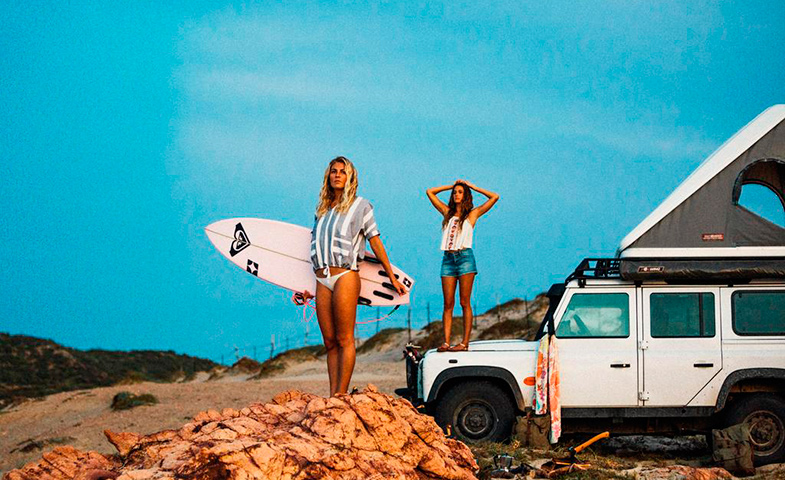

COMIENZO DE NUESTRA HISTORIA
Mundaka Surf comenzó su andadura en 2007, en el privilegiado enclave de la playa de Mundaca, donde la naturaleza ofrece óptimas condiciones para la práctica de este deporte.La Escuela Mundaka Surf es una escuela de surf homologada por la Federación Española y europea de surf. Escuela oficial de Vizcaya, sello oro en Grados de calidad deportiva y miembro de la Asociacion de Escuelas y Surfistas Profesionales.
Aprende a surfear con la Escuela Mundaka Surf, Escuela de Surf Nº1 en España. Disfruta de la magia del surfing con nosotros. Clases de surf para todas las edades y niveles en la playa de Somo, Cantabria.
Mundaka surf nace de la pasión de un grupo de amigos que han convertido su afición en una escuela en crecimiento. La ilusión de las socias, para las cuales Mundaka Surf es un proyecto de vida, ha creado un ambiente distendido dónde practicar deporte y divertirse.La escuela nació con una filosofía, que sigue intacta hasta el día de hoy; transmitir y enseñar todos nuestros conocimientos y experiencia sobre el mundo del surf. Acercar este maravilloso deporte y procurar que entiendan, que el surf, no es sólo un deporte, sino una forma de ver y entender la vida… y después de 10 años, creemos que ese ha sido el éxito de la escuela; el saber trasmitir el amor que nosotros sentimos por la mar y por las olas.
Mundaka Surf es una pieza fundamental en el desarrollo turístico de Vizcaya.Aprende a surfear en nuestra escuela, Escuela de Surf Nº1 en España. Disfruta de la magia del surfing con nosotros. Clases de surf para todas las edades y niveles en la playa de Somo, Cantabria.
La Escuela Mundaka Surf es una escuela de surf homologada por la Federación española y europea de surf. Escuela oficial de Vizcaya, sello oro en Grados de calidad deportiva y miembro de la Asociacion de Escuelas y Surfistas Profesionales. La Escuela de Surf Quiksilver & Roxy se encuentra entre las mejores escuelas de surf de Europa. Primera escuela de surf de España, con más de 27 años de experiencia. Una de las escuelas de surf más reconocidas y prestigiosas de Europa. Dirigida por surfers de verdad, que aman el surf y sabrán trasmitirte la esencia del surfing desde el primer día.
¡Ven a conocernos!